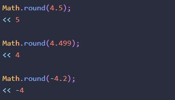

WDD 330: Portfolio Week 3
My Notes:
OBJECT - What is an Object
An object in JavaScript is a self-contained set of related values and functions. They act as a collection of named properties that map to any JavaScript value such as strings, numbers, booleans, arrays, and functions. If a property’s value is a function, it is known as a method.
Object Literals:
-
An object literal is an object that is created directly by wrapping all its properties and methods in curly braces { }
An object literal is created by simply enter a pair of curly braces. example: const name = {}; -
Example of object literal:
Checking if Properties or Methods Exist
This is done by using the "in" operator, "!== undefined" or "hasOwnProperty() method:
-
Example of how to check the existence of properties or methods:
Removing properties
This is done by using using the "delete" operator.
-
This is how any property is removed from an object.
The Math Object:
The Math object is a built-in object that has several properties representing mathematical constants,
as well as methods that carry out a number of common mathematical operations.
All the properties and methods of the Math object are immutable and unable to be changed.
The Math object also has several methods to carry out a variety of useful mathematical operations.
Rounding Methods:
-
The Math.ceil() method will round a number up to the next integer, or remain the same if it is already an integer
-
The Math.floor() method will round a number down to the next integer, or remain the same if it is already an integer
-
The Math.round() method will round a number to the nearest integer

Absolute Values:
The Math.abs() method returns the absolute value of a number. So if the number is positive, it will remain the same, and if it’s negative, it will become positive
Powers and Roots:
- The Math.exp() method will raise a number to the power of Euler’s constant
- The Math.pow() method will raise any number (1st argument) to the power of another number (2nd argument)
- The Math.sqrt() method returns the positive square root of a number
Logarithmic Methods:
The Math.log() method returns the natural logarithm of a number
Maximum & Minimum Methods:
- The Math.max() method returns the maximum number from its arguments
- The Math.min() method unsurprisingly returns the minimum number from the given arguments
Trigonometric Functions:
- The Math.sin() returns the sine of an angle
- The Math.cos() returns the cosine of an angle
- The Math.tan() returns the tangent of an angle
- The Math.asin() returns the arcsine of a number. The result is an angle
THE DOCUMENT OBJECT MODEL - What is the DOM?
-
Example of a DOM tree

The DOM represents an HTML document as a network of connected nodes that form a tree-like structure.
The HTML tag is the root node, and every other part of the document is a child node of this.
Map, Filter and Reduce:
Map:
The map() method is used for creating a new array from an existing one, applying a function to each one of the elements of the first array.
Filter:
The filter() method takes each element in an array and it applies a conditional statement against it. If this conditional returns true, the element gets pushed to the output array. If the condition returns false, the element does not get pushed to the output array.
Reduce:
The reduce() method reduces an array of values down to just one value. To get the output value, it runs a reducer function on each element of the array.
EVENTS - TYPES OF EVENTS:
-
The Mouse Events. There are also the mousedown, and the mouseupevents.
-
The Keyboard Events. These events trigger three events when a user presses a key.
-
The Event Listeners: How to use an event listener
QUESTIONS:
- When can we exactly use the map() and filter() method?
- When using the sort method, why do we use 1 to return true and -1 to return false instead of 0?